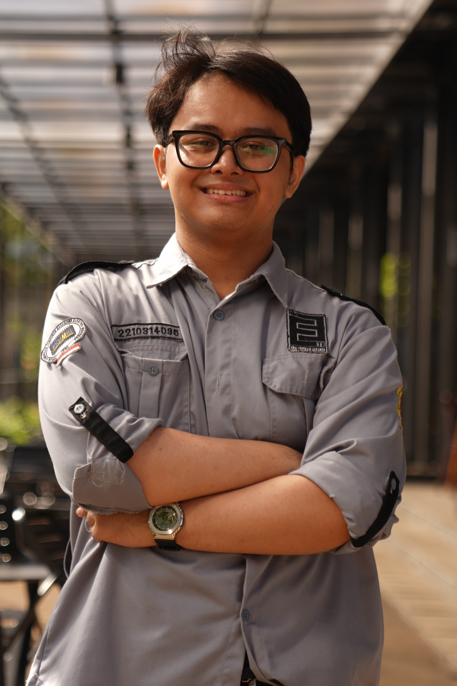
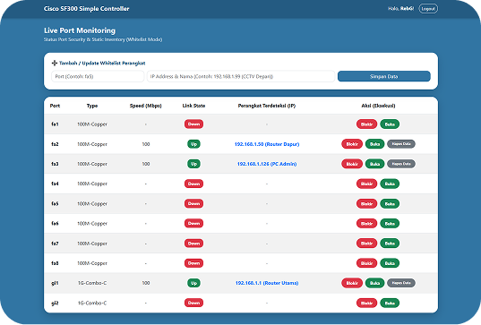
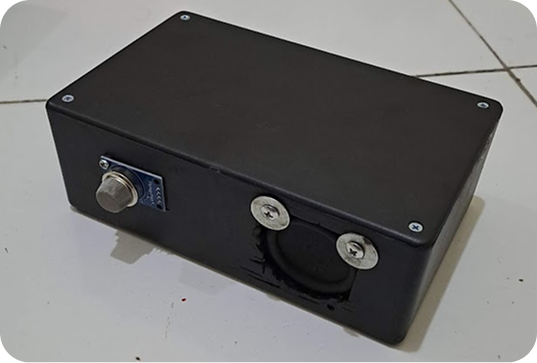
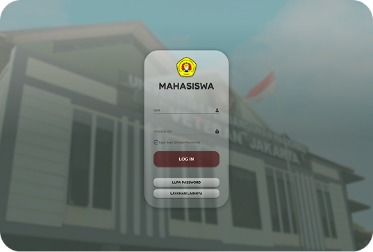
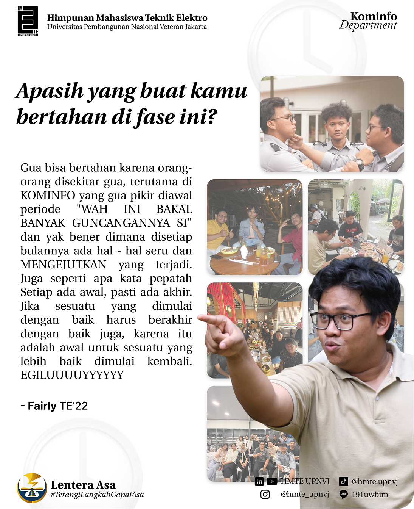
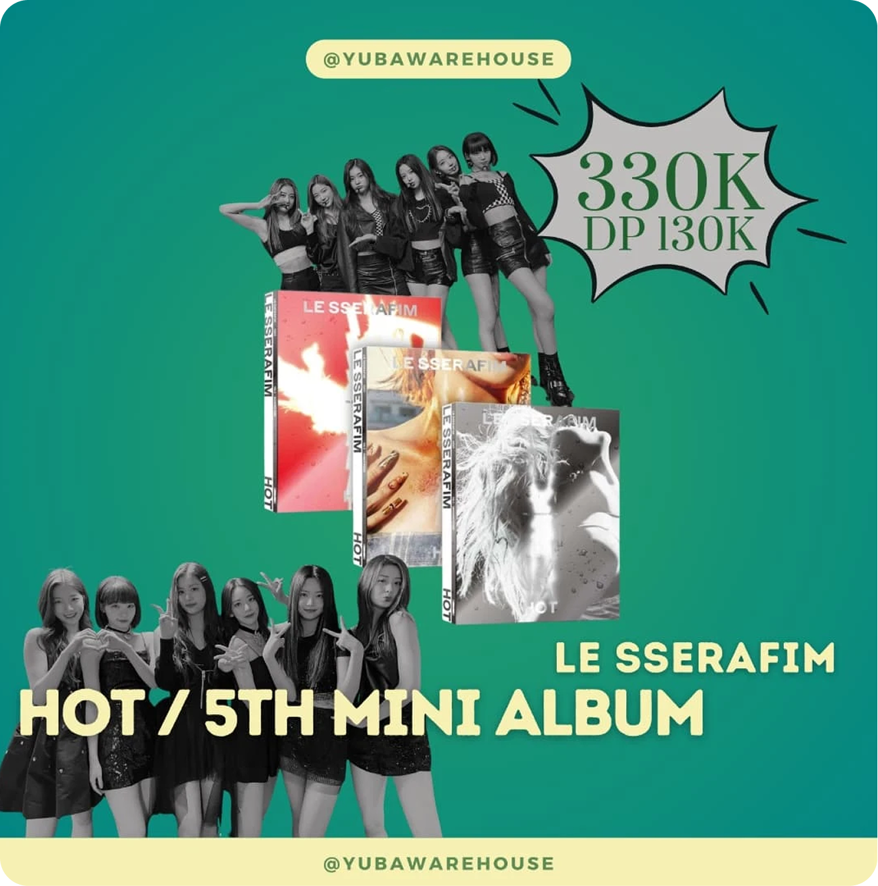
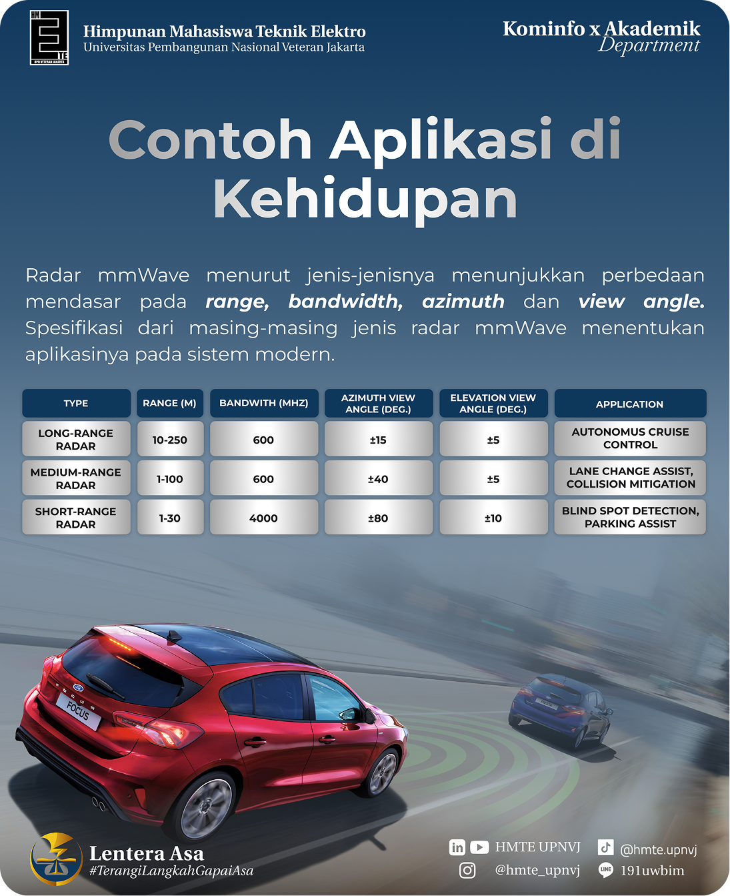
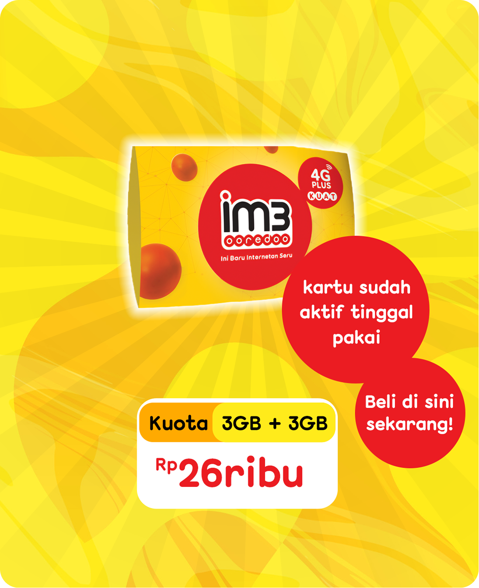

Electrical Engineering Student focused on Telecommunications. I bridge the gap between hardware and software, building automated networks and IoT solutions with Python, while exploring visual aesthetics through graphic design.

JKT, ID (UTC+7)
Figma / Photoshop
Cisco / IoT
Python (Netmiko)

[Cisco SF-300 / Python]
A Python-powered Custom Web Dashboard utilizing Netmiko to automate Layer 2 Port Security, enabling efficient 1-click access control.

[ESP-NOW / Hardware]
An autonomous IoT safety system featuring router-independent M2M communication to automatically trip electrical breakers during emergencies.

[Figma / UI-UX]
A comprehensive visual interface redesign of a campus academic portal, focused on modernizing information hierarchy.




Yubawarehouse - Created daily sales content for a Korean goods purchasing service, ensuring accurate product displays and maintaining brand consistency.
PT. Komplit Indonesia - Coordinated team daily activities, communicated with agency PICs, and compiled weekly sales reports in Excel.
CV. STOWINDO - Managed inventory, prepared project materials, coordinated logistics, and managed essential delivery documents.
KSM Internet of Things UPNVJ
HMTE UPNVJ
MOSFET 2024
ELECTROLYMPIC 2024
Veteran Got Talent 2024
Electrical Competition 2023
Masa Bimbingan Teknik Elektro 2023
Teknik Elektro Mengajar 2023
Campus Goes to Sixty 2023
OSIS SMAN 60 Jakarta